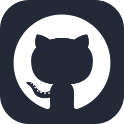
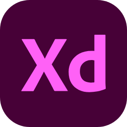
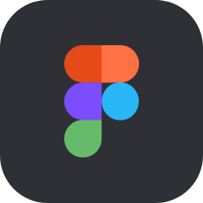
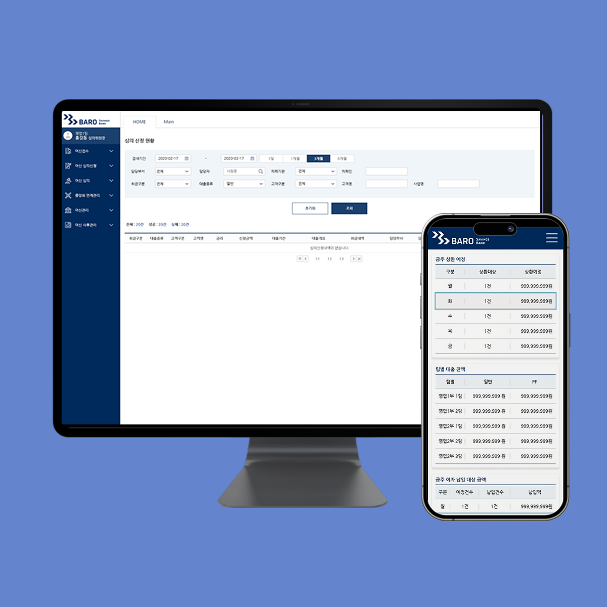

INHYEA’S
PORTFOLIO
안녕하세요. 저는 UI/UX 퍼블리싱(프론트엔드 개발자) 하는 5년차 웹 퍼블리셔 최인혜 입니다.
저는 사용자 중심의 웹 경험을 디자인하고, 주로 HTML, CSS, JavaScript와 함께 React 및 Vue.js와 같은
페이지를 만듭니다.
ABOUT ME
- 최인혜 (CHOI IN HYEA)
-
안녕하세요! 5년 차 웹 퍼블리셔 최인혜입니다.
HTML, CSS, JavaScript, jQuery 등을 활용해 웹사이트와 앱 화면을 구현하고 있습니다.
웹 표준과 접근성을 준수하며, 다양한 브라우저와 기기에서도 일관된 사용자 경험을 제공하기 위해 세심하게 작업합니다.
코드 구조와 성능을 꾸준히 개선해, 빠르고 안정적인 서비스를 만드는 데 집중하고 있습니다.
디자인 의도를 정확히 반영하면서도 유지보수성과 효율성을 고려한 퍼블리싱을 지향합니다.
주로 Figma, Adobe Xd Git 등을 사용하여 협업하고 있으며,
필요에 따라 Vue.js, Vite, TypeScript 환경에서도 작업 경험이 있습니다.
작은 부분까지 완성도를 높이는 것을 좋아하며, 맡은 일은 끝까지 책임감 있게 수행합니다.
새로운 기술과 방식에 유연하게 대응하며, 사용자에게 더 나은 웹 환경을 제공하기 위해 꾸준히 성장하고 있습니다.
- WORK EXPERIENCE
- 2023.06 ~ 프리랜서
- 2019.11 - 2023.02 (주)갤러리 2번출구
- EDUCATION
- 2018.05 - 2019.02 스마트 UI/UX 디자인 콘텐츠 개발 양성 - 라인아트컴퓨터학원
- 2014.02 - 2018.02 한국교통대학교 컴퓨터공학과 졸업
- CERTIFICATION
- 2019.04 컴퓨터그래픽스 운용기능사
- 2018.12 웹디자인 기능사
- 2018.05 정보처리기사
- 2017.08 컴퓨터활용능력 1급



WORKS
- 
- 한국증권금융 클라우드 공동인증서비스 구축
- WebSquare | Web | Mobile | 퍼블리싱
- 천재 수학교재 콘텐츠 개발 프로젝트
- WebSquare | Web | Mobile | 퍼블리싱
PROJECT
-
클라우드 공동인증서비스 구축badge
한국증권금융
-
JT저축은행 모바일 앱 퍼블리싱 및 앱 아이콘 제작
- 2025.07 ~ 2025.10
-
IT-SRM 구축 프로젝트badge
삼성증권
-
JT저축은행 모바일 앱 퍼블리싱 및 앱 아이콘 제작
- 2025.07 ~ 2025.10
- KB증권 SFAbadge
-
JT저축은행 모바일 앱 퍼블리싱 및 앱 아이콘 제작
- 2024.11 ~ 2025.04
- 천재 수학교재 콘텐츠 개발 프로젝트badge
-
웹 콘텐츠 수정 및 유지보수 작업 진행
- 2024.07 ~ 2024.08
- 고려저축은행 금융플랫폼 개편사업
-
고려저축은행 웹사이트 및 앱 퍼블리싱
다양한 기기의 호환성과 웹 접근성을 고려하여 설계
주로 메뉴 등 인터렉션 동작 작업 설계 - 2023.06 ~ 2023.07
- 여신종합/IFRS 시스템 차세대 개발구축
-
여신종합/IFRS 시스템 리뉴얼 퍼블리싱 | 퍼블리싱 기여도 90%
디자인에 맞춰 코드를 대량생산 가능하도록 규격화 진행 - 2023.01 ~ 2023.02
- 키움예스저축은행 주식담보대출 plus
- 주식담보대출 plus 화면 디자인 및 퍼블리싱 | 디자인 기여도 80%, 퍼블리싱 기여도 100%
- 2023.01 ~ 2023.02
- 지앤비소프텍, 퓨어솔루션 홈페이지 리뉴얼
- 업무 내용 기존 자사 홈페이지 및 회사 홈페이지 반응형 퍼블리싱 진행 | 퍼블리싱 기여도 70% 2개의 회사페이지를 하나의 시스템으로 통합 및 리뉴얼 진행
- 2023.01
- 자사 홈페이지(투게이트) 리뉴얼
- 업무 내용 기존 자사 홈페이지 리뉴얼 퍼블리싱 진행 | 퍼블리싱 기여도 70% 다양한 웹 브라우저 및 기기에서의 호환성 제공 로딩속도 개선하기위한 성능 최적화 작업
- 2022.11 ~ 2022.12
- 차세대 지능형 나이스 프로젝트
- 업무 내용 교육 시스템 차세대 나이스 퍼블리싱- eXBuilder6 솔루션 사용.
- 2022.07 ~ 2022.10
- NH올원뱅크 차세대 플랫폼 구축
- 올원뱅크 앱 일부 퍼블리싱 및 유지보수
- 2022.04 2022.05
- JT저축은행 웹·모바일 개선·통합 프로젝트
- 업무 내용 JT저축은행 웹사이트 반응형 퍼블리싱 진행 | 퍼블리싱 기여도 70% 웹 표준 및 웹 접근성을 고려하여 퍼블리싱 진행 (접근성 인증마크 획득) 추가로 내부 관리자 시스템 퍼블리싱 진행
- 2022.03 ~ 2022.06
- 키움저축은행 주식담보대출 plus
- 주식담보대출 plus(개인사업자대출 추가 및 리뉴얼) 화면 디자인 및 퍼블리싱 | 디자인 기여도 80%, 퍼블리싱 기여도 100%
- 2022.01 ~ 2022.02
- 저축은행중앙회 오픈뱅킹 카드, 선불 시스템 구축
- 업무 내용 저축은행 중앙회 앱 sb톡톡 오픈뱅킹 카드, 선불 추가 | 퍼블리싱 기여도 100% 리드 퍼블리셔로 프로젝트 완료 기간을 단축하고, 개발 팀과의 협업이 원활하도록 진행
- 2021.11 ~ 2022.02
- OSB저축은행 KCB 신용정보조회 화면개발
- OSB저축은행 앱 내, KCB 신용정보조회 화면 퍼블리싱 | 퍼블리싱 기여도 100% 최소 디바이스 320고려하여 진행
- 2021.06
- 오릭스캐피탈 온라인 해피콜 대고객 업무처리 화면개발
- 업무 내용 온라인 해피콜 서비스 페이지 퍼블리싱 | 퍼블리싱 기여도 100% 최소 디바이스 320부터 최대 디바이스 960까지 고려하여 진행
- 2021.05 ~ 2021.08
- NH저축은행 모바일 1, 2차 고도화 개발
- 업무 내용 NH FIC Bank 앱 및 웹 퍼블리싱 | 퍼블리싱 기여도 100% 대량양산에 대한 설계가 가능하게 공통화에 집중하여 퍼블 진행 1차, 2차까지 성공적으로 오픈되면서 공과금페이지 추가 퍼블리싱 진행 및 유지보수 담당자로 발탁
- 2020.12 ~ 2021.11
- 청일건설 홈페이지 구축
- 업무 내용 청일건설 회사 홈페이지 반응형 퍼블리싱 | 퍼블리싱 기여도 100% 업체와의 정기적인 미팅 이메일 소통을 통해 프로젝트 진행 상황 공유 및 작업 진행.
- 2021.01 ~ 2021.02
- 롯데카드 스탁론 화면개발
- 업무 내용 롯데카드 스탁론 디자인 및 퍼블리싱 진행 | 디자인 기여도 100%, 퍼블리싱 기여도 100%- IE8부터 고려하여 퍼블리싱 진행 화면설계서 기획 업무 보조 | 기여도 30%
- 2020.12 ~ 2021.01
- 신용회복위원회 심층상담서비스 화면개발
- 업무 내용 신복위 심층상담서비스 Pc/Mo 퍼블리싱 | 퍼블리싱 기여도 60%
- 2020.10 ~ 2020.12
- BC카드 스탁론 화면개발
- BC카드 스탁론 페이지 퍼블리싱 | 퍼블리싱 기여도 70%
- 2020.09 ~ 2020.10
- JT저축은행 모바일 앱 개발
- 업무내용 JT저축은행 앱 퍼블리싱 | 퍼블리싱 기여도 40% 디자인 보조 앱 아이콘 제작 및 이미지 보정업무 보조
- 2020.05 ~ 2020.07
- 바로저축은행 여신통합시스템 구축
- 업무내용 여신통합시스템 Pc/Mo 웹 퍼블리싱 | 퍼블리싱 기여도 90% 디자인 보조 레이아웃 디자인 및 이미지 보정 업무 보조 | 디자인 기여도 30% 운영 및 유지보수를 위해 코드를 공통 사용이 가능하도록 설계
- 2019.11 ~ 2020.03